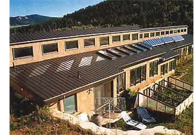
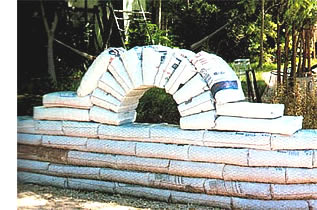

Building With Earth
Homes made from natural, earthen materials are affordable, comfortable, sustainable and enduring, including the pros and cons of adobe, cob, rammed-earth and soil-filled tire techniques.
By Dan Chiras
April/May 2002
In the rain-drenched landscape of Cottage Grove, Oregon, Ianto Evans and Linda Smiley live in a delightful little cottage fashioned from a most unlikely material, a mix of mud and straw, known as cob. Their home is warm, cozy and comfortable-not at all what you might think of a dwelling made out of ... well, dirt.
Ianto and Linda are two of a growing legion of people worldwide who are embracing earth building, a centuries-old tradition of architecture and construction. This unlikely band of Earth heroes is helping to forge more sustainable homebuilding techniques.
Building homes from earthen materials has a long, illustrious past. For virtually all of history, our ancestors lived in shelter fashioned from locally available materials, especially earth. Today, approximately half the world's people still inhabit dwellings made with soils harvested from the Earth's crust.
WHY BUILD WITH EARTH?
For one. earthen homes are clean, come and beautiful-even breathtaking. The thick. solid walls create a sense of comfort and security. Walls made of earth am not only strong, they are capable of re insects, earthquakes, hurricanes, tornadoes and fire. They have the very real potential to last hundreds of years.
Earthen homes are appropriate for a variety of climates and are ideally suited for passive solar heating and cooling. If designed well, they stay warm in the winter and cool in the summer with little, if any. need for auxiliary energy. Built largely from soil excavated on site, earthen homes require substantially less fossil fuel derived energy to build than the conventional wood-frame homes popping up by the millions.
Reduced energy consumption provides a wide range of environmental benefits, including reductions in greenhouse gas emissions. Earth homes require much less wood to build, helping ease pressure on the world's over-harvested forests. Materials are collected locally: No huge mines or clear-cut forests are required to supply building materials, and the blemish produced when extracting earth can generally be repaired quickly and easily with little environmental impact. A hole dug to extract clay-rich dirt for an adobe home, for instance, can be filled in, regraded and replanted, or it can be left to fill with water, creating a pond for wildlife to drink from on hot summer days.
Construction of earth homes is user-friendly-often more like play than work. Most earthen building techniques require very little skill and are ideally suited to owner-builder projects. You can learn what you need to know in a weeklong workshop and by reading some of many books on the subject.
Earth homes can be quite economical, further adding to their appeal. Here are the pros and cons of the major earth home options: adobe, cob, rammed earth, tire homes and earth bags.
Adobe
Adobe brick home-building is an ancient technique that originated in the Middle East and later spread to Europe. As the Spanish sought riches in the New World, they brought this method with them. Today it is still practiced in Mexico and to a lesser degree in other parts of North America.
Traditional builders use adobe blocks made from a mix of clay-rich soil, sand, straw and water. The mixture is poured into block forms and baked in the sun. A couple of weeks later, the bricks are ready for use.
Like conventional bricks, adobes are laid in a running bond-an overlapping pattern-then mortared in place with adobe mud. For added protection, adobe walls should be finished with an earthen or mud plaster.
Although traditional adobe block-making still reigns in poorer countries, many contemporary adobe builders in North America are substituting machine-made blocks-called pressed earth blocks-for sun-dried adobes.
Pressed earth blocks are stabilized with a little cement and cranked out in a fraction of the time of a traditional adobe brick. This process generates more uniform blocks and makes adobe home construction feasible in wetter climates. Despite these advantages, pressed earth blocks represent industrial production shunned by some in the natural building movement.
There are still many good reasons to continue this centuries-old adobe tradition, besides the general benefits of earthen building mentioned earlier.
Advantages of adobe
• Adobe mud is a widely available, local resource.
• Construction is approved by most building departments.
• For owner-builders traditional adobe is inexpensive and a fairly low-skill job.
Disadvantages
• Building is time-consuming and labor intensive.
• If labor costs are high, adobe home construction can be quite expensive.
• Traditional adobe block construction requires adequate drying periods, and thus might not be suitable for wetter, colder climates.
English Cob
When I first heard a natural builder mention cob homes, I immediately began to wonder: How in the world do people make homes out of corn cobs?
They don't. Cob is an Old English word meaning a lump or rounded mass. Cob homes are mud-walled buildings, made from rounded masses of clay-rich dirt stacked on foundations by hand, then kneaded and shaped to produce smooth surfaced walls.
Cob builder Becky Bee, author of The Cob Builder's Handbook, likens cob construction to "hand-sculpting a giant pot to live in." Unlike clay pots, though, the walls of cob rooms are thick-4 to 24 inches- strong and durable. When the cob mix dries, it takes on the hardness of sandstones.
Like adobe, cob consists of mud and straw. Mixed in pits, usually tromped by feet, the cob is then formed into small-loaves, which are deposited on the foundation, then massaged and shaped by hand.
Slowly but surely, a wall emerges with smooth, curved surfaces. Finished cob walls may be left unplastered or may be painted with a traditional lime wash to provide protection and beauty. In many in cob is coated with an attractive protective layer of earthen or lime plaster
Advantages of Cob
• Wall building is fun, easy to learn and relatively inexpensive.
• Encourages artistic expression and lends itself to curved walls and other usually exciting features, such as niches
• Durable, fireproof and nontoxic.
Disadvantages of Cob
• In most of North America cob is a "new" building concept: obtaining approval may be difficult.
• Can be time-consuming.
Rammed Earth
Rammed earth is one of the oldest of all natural building methods. Rooted in North Africa and the Middle East, it dates back to the time of the pharaohs. Today commercial builders in California, New Mexico, Arizona and Colorado are using this time-tested technique to construct modern homes.
To build a rammed-earth home, wooden or steel forms are mounted on a 1- to 2 foot-thick foundation. Six to 8 inches of slightly moistened dirt are shoveled into the forms, then tamped with a pneumatic tamping device. More dirt is added, then tamped. Once the form is filled, it's removed. The moistened soil dries, creating a thick, strong, sandstone-like wall. "Raw earth walls, especially those containing native subsoil and clay, are remarkably durable and handsome.
Traditional rammed-earth construction relies on a mix of 70 percent sand and aggregate (small stone) and 30 percent clay. The clay acts as a binding agent.
In areas where moisture and earthquakes are a problem, rammed-earth builders often use a mix of sand and Portland cement, although the results lack the visual appeal of raw earth walls. Rammed-earth walls may be left as is, or plastered or stuccoed to provide an additional measure of protection.
Advantages of Rammed Earth
• Produces an extremely attractive and enduring structure.
• Suitable for many different architect ural styles.
• Often cheaper to build than brick, stone and adobe structures.
Disadvantages of Rammed Earth
• Requires special skills and construct ion of forms; generally not suited for owner-builders.
• Costly, if labor costs are high.
• May be difficult to gain building dep artment approval.
Tire Homes
While some builders ram or pour earth into forms, others are building walls using earth that's packed into old automobile tires. Called rammed-earth tire homes. or simply tire homes, this distinct architecture makes use of an abundant waste product(Americans discard nearly 250 million car tires each year.)
These structures are the brainchild of New Mexico architect and builder Michael Reynolds, who calls his tire homes Earthships. In building an Earthship, tires are laid out, typically in a U-shape, on compacted subsoil or on a foundation.
The tires are then filled with dirt from the site, and the dirt is compacted using a sledge hammer or a pneumatic tamping device. A fully compacted tire bulges with 300 to 350 pounds of dirt.
After the first row is finished, a second row is laid down, filled with dirt and tamped. Tires are placed on top of the first course in a running bond, with six to eight rows of tires making up a wall.
The tire walls are typically finished with a mud plaster or cement stucco, erasing all evidence of their composition and eliminating fire hazards and potential odors.
The majority of earthen building techniques lend themselves to owner-builder projects.
With the walls complete, the rest of the building is framed in. Depending upon your building design and skills, the result can be the funky look of an Earthship or a more normal-looking house for those with more conventional taste.
Advantages of Tire Homes
• Uses an abundant waste product and local resources. Most are earth-sheltered and thus protected from temperature extremes.
• Often easier to get approval, thanks to extensive data and assistance available from Reynolds.
• Resistant to earthquakes, tornadoes
and hurricanes.
Disadvantages of Tire Homes
• It's hard work.
• Tire homes tend to have an open design and can be noisy and less than private.
• Walls tend to gobble up living space.
Earthbag Homes
Although humans have been using sandbags to build bunkers and to hold back rising flood waters for a very long time, building homes from bags of dirt is a relatively new concept in the field of natural building.
Earthbag walls are made from reject burlap or polypropylene bags (the kind bulk rice comes in). The bags are filled with slightly moistened clay-dirt or cement-stabilized dirt, then pinned shut, laid down on a foundation and tamped. When the soil dries, it hardens like rammed earth. Earthbags are set in a running bond, then covered with plaster. Earthbags are ideal for creating vaults or for building round structures with domed roofs.
Advantages of Earthbag Construction
• Easy to learn.
• Used to build domes, vaults, foun dations and patio walls.
Disadvantages of EarthbagConstruction
• Labor-intensive.
• New, and thus difficult to obtain ap proval from building authorities.
Used tires packed with earth can be laid like giant bricks to form walls, which are then plastered.
CLIMATE SUITABILITY
Earth homes are suitable in a wide range of climates, even some rather wet ones. Cob, for example, does extremely well in Oregon's soggy, rainy forests and Old England's wind-battered, rain-drenched coasts.
In all earth building systems, the key to success in wet climates is to prevent the mud from being eroded away by protecting walls from rain. A well-designed roof with a suitable overhang and other design features provide adequate protection. A protective coat of lime plaster is often applied for added durability.
Most earth homes are concentrated in hot, dry climates and are suited for passive solar heating and cooling in such areas. Thick wall mass protects interiors from temperature extremes.
If earth homes have a limitation, it is cold climates. Earth is a poor insulator. However, this inadequacy can be countered by building thicker walls that retard heat flow, creating an insulation-filled cavity in the interior of the wall or applying external insulation.
DOWN TO EARTH
Although earth building is a great option, the movement is hindered by the lack of experienced and willing architects, engineers and builders.
Fortunately, the majority of earthen building techniques lend themselves to owner-builder projects. If you choose to build your own home, you'll need in Auction-a weeklong workshop, perhaps. Experiment with a small shed or a cottage before you tackle a house.
Over the years I've found there's a widespread romanticism among many natural builders, which sometimes hides the limitations or problems you may encounter. One result of this rosy outlook pan be an oversimplification of home building and an underestimation of construction costs. Although earthen wall building may be relatively simple, there's a lot more to a house than exterior walls. Roofs, plumbing, electrical wiring, interior walls and finish details require considerable skill. If you're not a competent and somewhat experienced builder, you'll need to hire professionals.
Where cost is concerned, remember that building exterior walls with earthen materials, especially if you do a lot of the work, may cost less than using conventional materials. However, exterior walls constitute only 10 percent to 15 percent of the total cost of building a house. Among other things, the full expense of a house depends on the complexity of the design, the amount of labor you supply versus construction supplied by subcontractors and the expectations you have for the finished product.
That said, it is possible to build from natural earthen materials a house that will perform well in almost any climate, providing a classy comfort and aesthetic quality unrivaled in most conventionally constructed homes. Selecting the appropriate method for your purposes and life can bring that dream home.
Earth-Building Resources
For a comprehensive list of books, articles, videos, workshops and links to vital Web sites, go to: www.chelseagreen.com/Chiras/resource.htm
ADOBE HOMES FOR TODAY
by Laura and Alex Sanchez
THE SMALL ADOBE HOUSE
by Agnesa Reeve
THE COB BUILDERS HANDBOOK: You can Hand-Sculpt Your Own Home by Becky Bee
THE NATURAL BUILDER, Volumes 1 and 2 by Steve Berlant www.naturalbuilder.com
THE NATURAL HOUSE: A Complete Guide to Healthy, Energy-Efficient, Environmental Homes by Daniel D. Chiras
ALTERNATIVE CONSTRUCTION: Contemporary Natural Building Methods by Lynne Elizabeth and Cassandra Adams
THE RAMMED EARTH HOUSE
by David Easton
PUTTING THE "ARC" BACK INTO ARCHITECTURE by Kaki Hunter and Doni Kiffmeyer (435) 2598378
BUILDINGS OF EARTH AND STRAW
by Bruce King
THE ART OF NATURAL BUILDING:
Design, Construction, Technology edited by Joseph F Kennedy, Michael Smith and Catherine Wanek
ADOBE: Build it Yourself by Paul G. McHenry Jr.
ADOBE AND RAMMED EARTH BUILDINGS:
Design and Construction by Paul G. McHenry Jr.
EARTHSHIP, Volumes I, II and 11 by Michael Reynolds
THE COBBER'S COMPANION: HOW to Build Your Own Earthen Home by Michael G. Smith (541) 942-2005 www.deatech.com/cobcottage
ADOBE BUILDER MAGAZINE
(505) 861-1255
www.adobebuilder.com
THE COBWEB
(541) 942-2005.
Videos
BUILDING WITH THE EARTH:
Oregon's Cob Cottage Co.
The Cob Cottage Company
PO. Box 123
Cottage Grove, OR 97424
RAMMED EARTH CONSTRUCTION
Bullfrog Films
(800) 543-3764
Writer Dan Chiras, Ph.D., lives with his two sons in a nearly independent passive solar/solar electric, rammed-earth tire and straw bale home in Evergreen, Colorado. This article is adapted from his newest book, The Natural House: A Complete Guide to Healthy, Energy-Efficient Environmental Homes.
|
PHOTO: NIGEL VALDEZ A cob cottage in Oregon, with cob garden walls and outdoor fireplace. |
COURTESY SANTA FE HABITAT FOR HUMANITY Habitat for Humanity workers build an adobe home in Santa Fe, New Mexico |
COURTESY LAURA SANCHEZ This adobe home sits in the foothills of the Sandia Mountains near Albuquerque. |
 PHOTO DAN CHIRAS Children help build what will eventually be a cob playhouse. |
PHOTO KIKO DENZER his ""mudcat"" made by Kiko Denzer demonstrates the sculptural potential of cob. |
The author's passive-solar home in Colorado combines rammed-earth and straw-bale techniques. |
|
 Earthbag construction is easy to learn and lends itself well to curves and arched features. |
 |
|
|
|
|
|